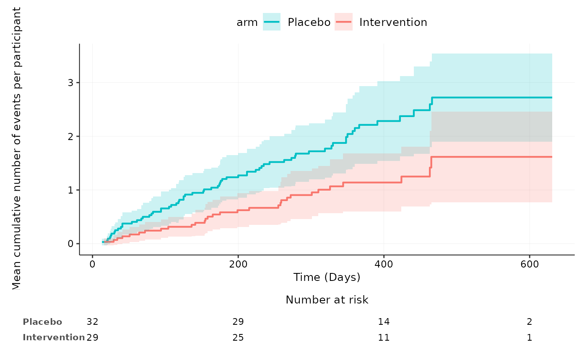

Mean cumulative function plot for harm outcomes by treatment group
aemcf.Rdaemcf plots the mean cumulative function (MCF) of all adverse events, adverse events of specific organ systems or specific adverse events with embedded table of number of participants at risk.
The nonparametric MCF estimates (by Nelson-Aalen estimator) and the approximate 95% confidence intervals are obtained using the mcf function of the reda package.
Usage
aemcf(
data,
arm_levels,
subset,
adverse_event = "adverse_event",
body_system_class = "body_system_class",
id = "id",
arm = "arm",
date_rand = "date_rand",
date_ae = "date_ae",
last_visit = "last_visit",
time_units = "days",
arm_names = NULL,
arm_colours = NULL,
conf.int = TRUE,
risk_table = TRUE,
save_image_path = NULL
)Arguments
- data
data frame with adverse_event, body_system_class, id, arm, date_rand, date_ae and last_visit columns
- arm_levels
vector of factor levels in arm variable
- subset
an optional argument specifying a subset of observations to be used
- adverse_event
name of adverse_event column
- body_system_class
name of body_system_class column
- id
name of id column
- arm
name of arm column
- date_rand
name of date_rand column
- date_ae
name of date_ae column
- last_visit
name of last_visit column
- arm_names
vector of names for each arm in arm variable
- arm_colours
vector of colours for each arm
- conf.int
a logical value whether to plot the 95% confidence intervals
- risk_table
a logical value whether to plot the risk table
- save_image_path
file path to save MCF plot as image
Examples
aemcf(df2, c("Placebo", "Intervention"), subset= body_system_class=="Gastrointestinal", adverse_event="ae_pt", body_system_class="aebodsys")
